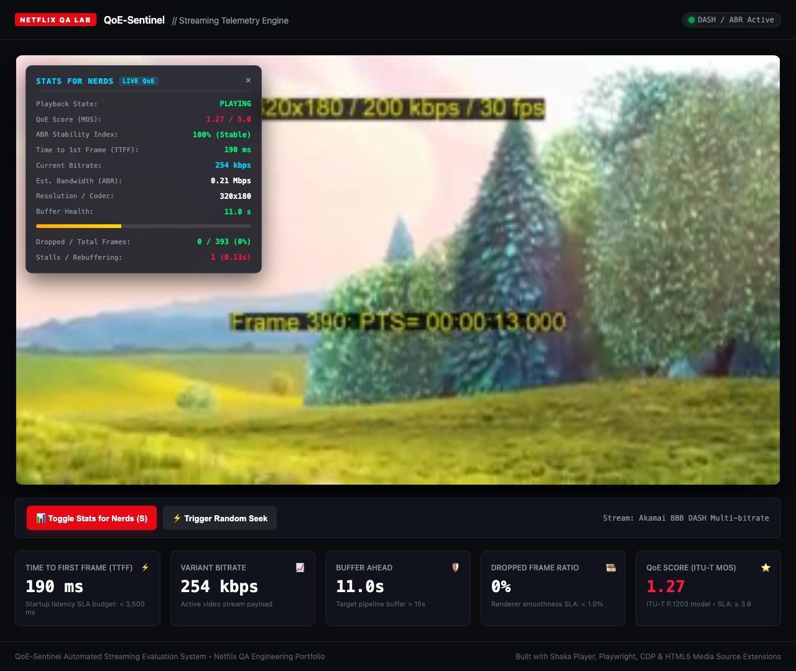
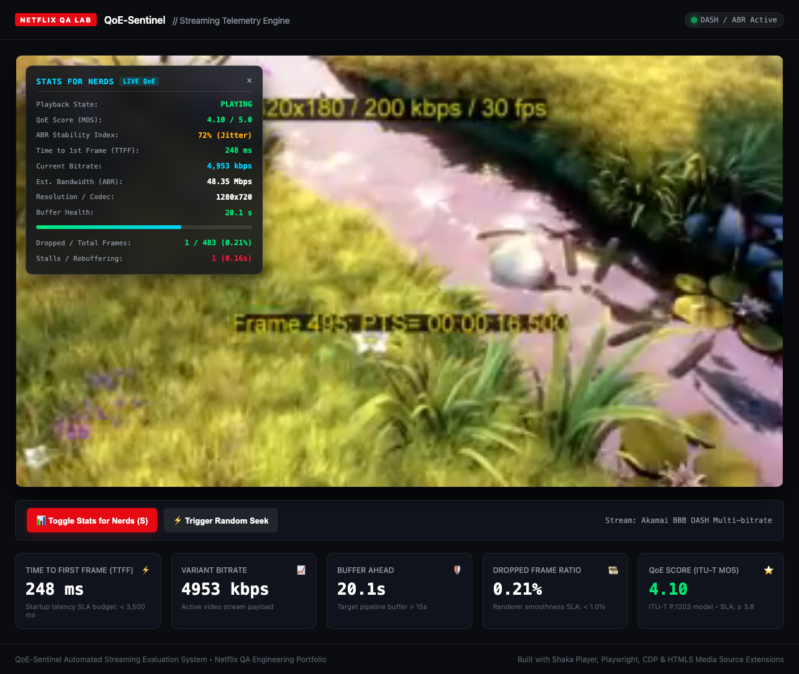
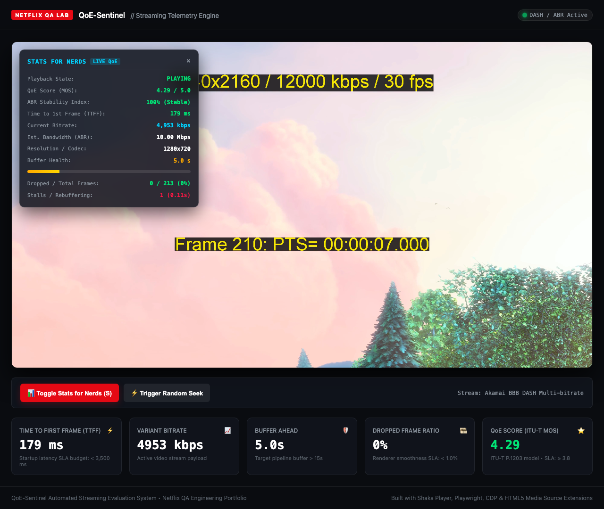
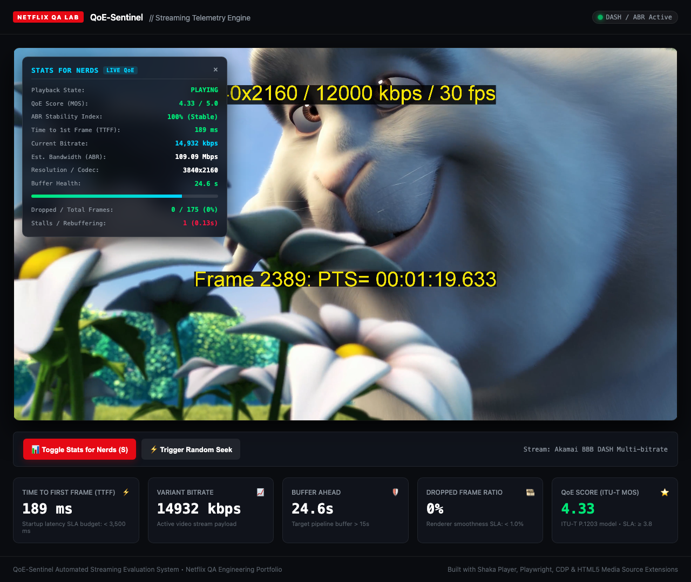
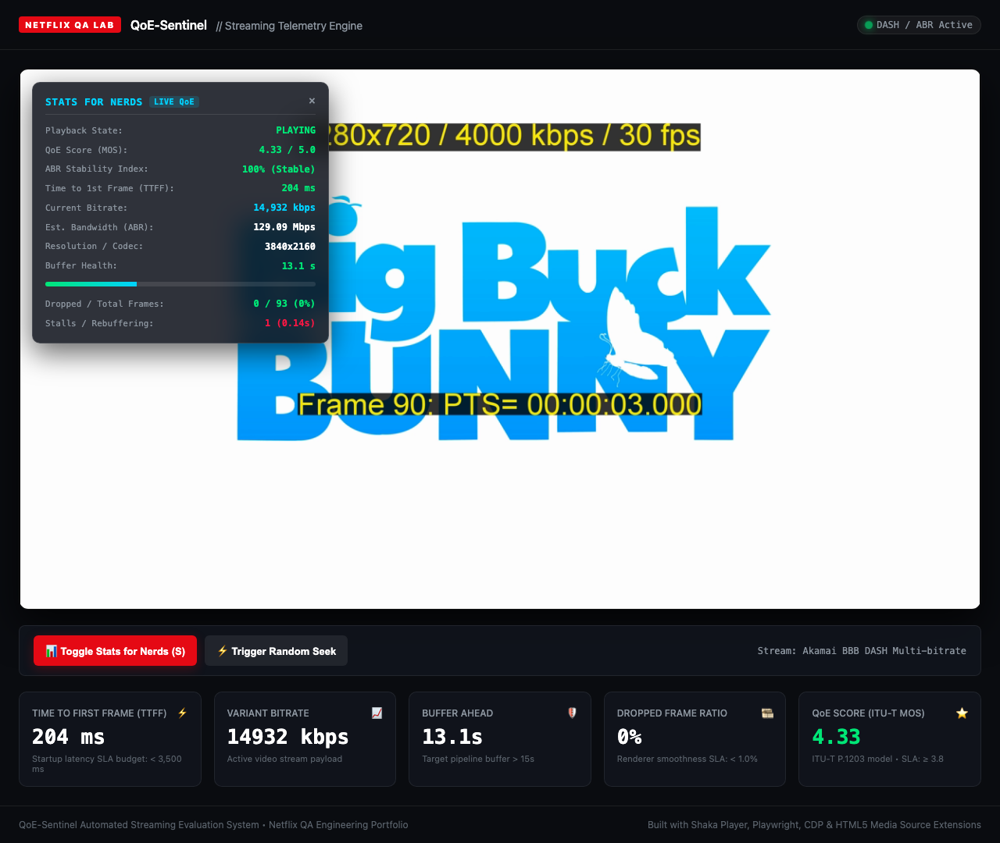

| Time | State | Bitrate | Est. Bandwidth | Resolution | Buffer | Frames (Drop/Tot) | Stalls | MOS Score |
|---|---|---|---|---|---|---|---|---|
| 0s | LOADING | 4,953 kbps | 9.00 Mbps | 1280x720 | 0.0s | 0 / 0 (0%) | 0 (0s) | 5.00 |
| 0s | BUFFERING | 14,932 kbps | 72.15 Mbps | 3840x2160 | 0.0s | 0 / 0 (0%) | 1 (0s) | 5.00 |
| 1s | PLAYING | 14,932 kbps | 117.88 Mbps | 3840x2160 | 3.0s | 0 / 33 (0%) | 1 (0.13s) | 4.33 |
| 1s | PLAYING | 254 kbps | 0.30 Mbps | 320x180 | 3.0s | 0 / 33 (0%) | 1 (0.13s) | 1.27 |
| 2s | PLAYING | 254 kbps | 0.30 Mbps | 320x180 | 6.1s | 0 / 63 (0%) | 1 (0.13s) | 1.27 |
| 3s | PLAYING | 254 kbps | 0.30 Mbps | 320x180 | 9.0s | 0 / 93 (0%) | 1 (0.13s) | 1.27 |
| 4s | PLAYING | 254 kbps | 0.30 Mbps | 320x180 | 8.0s | 0 / 123 (0%) | 1 (0.13s) | 1.27 |
| 5s | PLAYING | 254 kbps | 0.23 Mbps | 320x180 | 7.0s | 0 / 153 (0%) | 1 (0.13s) | 1.27 |
| 6s | PLAYING | 254 kbps | 0.24 Mbps | 320x180 | 10.0s | 0 / 183 (0%) | 1 (0.13s) | 1.27 |
| 7s | PLAYING | 254 kbps | 0.23 Mbps | 320x180 | 9.0s | 0 / 213 (0%) | 1 (0.13s) | 1.27 |
| 8s | PLAYING | 254 kbps | 0.19 Mbps | 320x180 | 8.0s | 0 / 243 (0%) | 1 (0.13s) | 1.27 |
| 9s | PLAYING | 254 kbps | 0.23 Mbps | 320x180 | 11.0s | 0 / 273 (0%) | 1 (0.13s) | 1.27 |
| 10s | PLAYING | 254 kbps | 0.23 Mbps | 320x180 | 10.0s | 0 / 303 (0%) | 1 (0.13s) | 1.27 |
| 11s | PLAYING | 254 kbps | 0.20 Mbps | 320x180 | 9.0s | 0 / 333 (0%) | 1 (0.13s) | 1.27 |
| 12s | PLAYING | 254 kbps | 0.20 Mbps | 320x180 | 12.0s | 0 / 363 (0%) | 1 (0.13s) | 1.27 |
| 13s | PLAYING | 254 kbps | 0.21 Mbps | 320x180 | 11.0s | 0 / 393 (0%) | 1 (0.13s) | 1.27 |
| 13s | PLAYING | 4,953 kbps | 9.00 Mbps | 1280x720 | 10.9s | 0 / 398 (0%) | 1 (0.13s) | 4.29 |